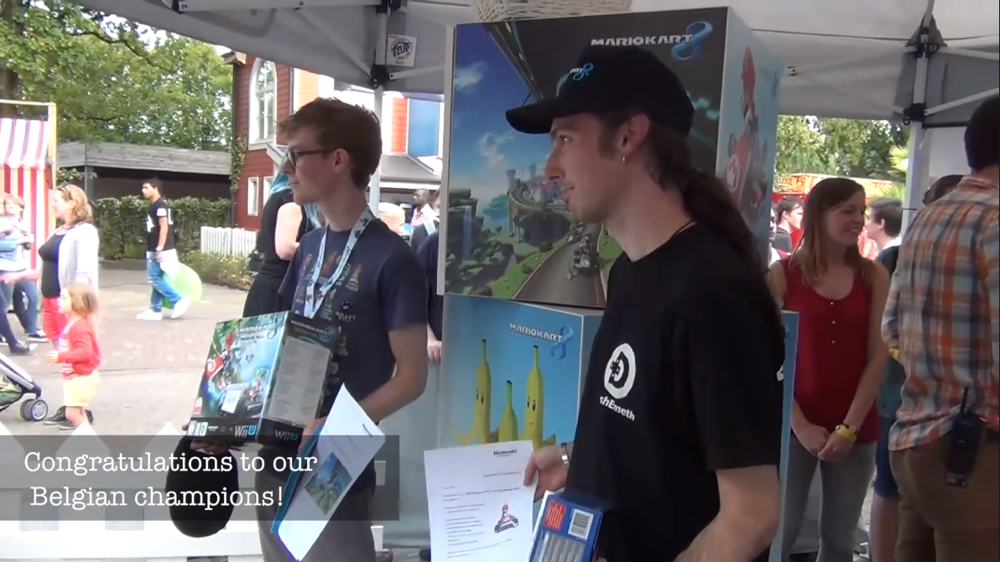
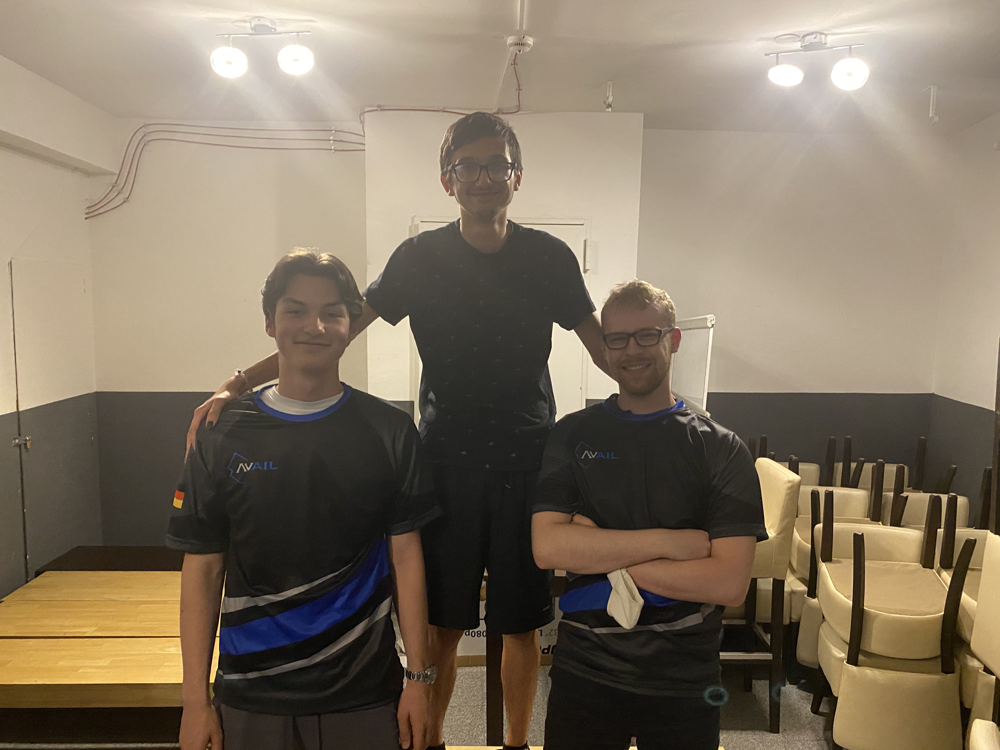

Mario Kart
I'm a big Mario Kart fan, specifically the Nintendo Wii version. When people introduce me to others, Mario Kart is usually said within the same breath!
I joined the Mario Kart community back in the Summer of 2009 as I created my Youtube channel then.
Currently I'm time trail champion of Belgium in Mario Kart Wii, and have had the title of Belgian Mario Kart Champion a few time over the past years officially recognized by Nintendo Benelux, which I'm particularly proud of! You can find me on the Time Trail rankings on Mario Kart Players Page, Mario Kart World Records and Mario Kart Leaderboards. I time trail primarily Mario Kart Wii, but sometimes other Mario Kart games too.
Real Life Tournaments
#1 in Mario Kart 7 Gameland 2012 at Bobbejaanland by Nintendo Benelux
This was my first Mario Kart tournament ever. This was a random Mario Kart 7 tournament organised by Nintendo Benelux at Bobbejaanland during the Game Land event. Game Land was an annually gaming event of Bobbejaanland, usually held during the first half of September where the whole amusement park turns into a gaming convention where Nintendo and other big companies show off their newest games.
The rules of the tournament were non-standard. You weren't allowed to chose your vehicle and character combo
and the only track you could play was Toad's Circuit. They handed you a 3DS with the combo set already.
The best combo that was available I remember was Bowser on the Bee kart with the blue monster wheels, haha!
You played one race and then the top 4 advanced to the next round.
It was like this for the whole tournament, including the final round.
There weren't any notable players participating, only casual players and some that somewhat knew how to drive, so not too much competition here. The price was a Trophy representing the in-game Special Cup trophy which can be seen in the banner picture of this page.
Sadly I don't have proof for my result, I have three pictures left taken near the tent where the tournament took place, but no podium picture and/or post by Nintendo announcing this tournament.
(Photo 1,
Photo 2,
Photo 3).
I did find this one random video showing some footage of the location where the tournament took place. This is the video. Sadly, you don't see me hanging around the tent in the video, haha!

A picture of the tent where the event took place. If you look at the table to the right where some people are standing around you can see the Special Cup trophy in display that you would have been able to win.
#1 in Mario Kart 7 Tour 2013 at Antwerp by Nintendo Benelux
This was a Mario Kart 7 tournament organised by Nintendo Benelux in Antwerp. This tournament was part of the Mario Kart 7 Tour Belgium 2013 tournament. This is how it worked; Over the whole year there would be a local tournament held in 8 big cities in Belgium. The winner of each tournament would get a free ticket to Bobbejaanland where the finals would be played. This particular tournament was the one held in Antwerp.
The rules of the tournament were a bit better. You could use your own 3DS and your own character/vehicle combo, though the tracks were only Mushroom Cup tracks.
If I remember correctly, the pre-rounds were 2 races (Toad's Circuit and Daisy Hills), top 4 advances and the finals were the whole Mushroom Cup.
This time one notable players participated, namely Dash Emeth who I knew from the Mario Kart community, and who I'll be facing many more times to come in other tournaments!
Other than that, I brought two school friends with me to play along and the other participants were just casual players. So, like last tournament, not too much competition here.
Especially since Emeth already won a tournament in one of his close-by cities, so he had a free ticket already anyway. If I had gotten second place and Emeth first, I still would have received a free ticket to the finals.
The price was, like last tournament, a Trophy representing the in-game Special Cup trophy which can be seen in the banner picture of this page.

Left to right: random player, me and Emeth.
#2 in Mario Kart 7 Tour 2013 at Bobbejaanland by Nintendo Benelux
This was the finals of the Mario Kart 7 Tour Belgium 2013 tournament organised by Nintendo Benelux in Bobbejaanland. The tournament was held, like last time in Bobbejaanland, during the Game Land gaming event. Nintendo had a booth with lots of Nintendo games, mostly focussed on the newest 3DS games at the time.
The rules were very good this time. You could use your own 3DS, chose your character/vehicle combo and also you could chose what track you want to play and the game would randomly chose what track to play from the selected bunch, exactly like how it works in online rooms. I don't remember all the tracks we played, but I remember playing Wario's Shipwreck and Neo Bowser City.
This tournament was really cool and competitive this time! Quite many notable players participated for a local tournament.
Dash Emeth was there of course, but this time he brought one of his teammates with him; Dash ProF who was the winner in another city so he participated too. He's more know for his skills in Smash Brothers, but he's still very competent in Mario Kart. I know him via Mario Kart Wii too.
A player called SharkOfDark was also present. He was an active player in WW's (Worldwide's, a term for online races) but not too much in Time Trails. He was a great player and definitely on equal footing as me in terms of pure online skills. He definitely was the toughest opponent.
Another player called DarkSilver sadly did not make it to the finals as he got 2nd place in the tournament where SharkOfDark got 1st place for his spot in the finals. They're both friends of the same highschool, which is pretty cool! DarkSilver was mainly a Time Trailer, but also a great online player. Would have been awesome to have met him.
Last, but definitely not the least notable player, if not THE most notable is Negens. He's a very well known Mario Kart player, mainly made his name in the Mario Kart Wii community for playing in the highest competitive division at the time when he played actively and was widely regarded as the best Belgian Mario Kart player. His skills on Mario Kart 7 didn't transfer over as well as his Mario Kart Wii skills, so for me he wasn't the biggest threat, but for sure the second biggest.
The other three players of the finals weren't anything special, just casual players who just ended up getting into the finals. They did knew how to drive decently, but nothing compared to actual competitive players.
In the end I got 2nd place overall. Really happy I was able to end up on the podium as my item luck was quite against me. SharkOfDark was able to run in 1st place most races without much trouble while I was stuck in the pack trying to catch up, haha! Again, another congratulations to SharkOfDark! Well played, man!
This time only first place received a price, which was if I remember correctly also another Special Cup trophy and also a free 3DS with a copy of Mario Kart 7.
You can find all the history of the Mario Kart 7 Tour tournament on its Facebook page.

Left to right: Dash Emeth, SharkOfDark and me.
#1 in Mario Kart 7 Online BE Community Tournament 2013 by Nintendo Benelux
This tournament was fully online, organised by the Facebook page of Nintendo Benelux. You would have to play in a specific Community group where you have to enter in a code provided by Nintendo Benelux to enter. You get 1 hour time to play as many races as you can and score as much as you can.
The top 3 of this tournament would get a free ticket to the Anime convention called Japan Expo at Brussels in 2013 and play the finals between us three there.
The rules were pretty good again. You could chose your own vehicle and chose which track to play. Literally like an online worldwide room.
One annoying thing I remembered was that over time people would stop playing and the rooms would not be full any more. That doesn't sound too big of a problem, but you don't get the full 10 points for getting first if the room is not full (8 players max), so I was pretty scared that my room would be the only one not being full and then not having the most points overall cause of not getting the full 1st place points...
But that was not a problem, I got 1st place by a landslide (52 points). There weren't any notable players I met during the tournament. I do see that in 4th place is the Mii that looks like the one from Dash Emeth. I guess he must have had the same problem I had with not having a full room, but even worse. Or he started playing later in the hour and did not have enough time to get enough points... Either way, he sadly did not make it.
The two players along with me in the top 3 were unknown to me, but I was not going to underestimate them.
The official post of Nintendo Benelux can be found here.

The post on Facebook of this result can be found here.
Here are two extra photos of Nintendo directly participating in the first two races: Photo 1, Photo 2. After those two races, he left.
#1 in Mario Kart 7 Japan Expo Belgium Finals at Japan Expo 2013 Brussels by Nintendo Benelux
This tournament took place in the anime expo called Japan Expo 2013 at Brussels. Since I finished in the top 3 in the last tournament, I got a free ticket to the convention and a spot in the finals.
What was extra special about this tournament is that the voice actor of Mario, Charles Martinet, was present! He was going to play along in the finals and commentate in Mario's voice!
This is how the tournament was setup, there was a separate venue with a big podium where concerts and other events took place for the Expo. On that podium is where the finals took place... Yeah I know, pretty insane, haha!
We would all sit in a row and play the finals. Charles would get a 3DS with a capture card and that would then be projected on a big screen.
Now sadly, that didn't go as planned as for some reason when we were about to start the finals, the footage of the capture card wasn't getting delivered to the nearly laptop that was connected to the projector. So in the end, sadly, the audience got to see no footage at all..
I was thinking about offering my own 3DS as mine also has a capture card and by coincidence I brought my capture card cable with me. But I didn't voice my idea in the end sadly. I do kind of regret not doing so, but I was afraid talking in French and/or having to download the needed application. Maybe it would have been too much of a hassle to do is what I thought... Oh well, that's how it went and nothing I can do to change it now.
The rules of the tournament were strange sadly. We played a full GP, but is was the Leaf Cup out of all the cups strangely enough. + to top it off, it was on 50cc!? Yeah, super strange indeed.
The two other finalists were decent players, but were clearly not players involved in the competitive scene or knew well how enough how to drive properly. So in the end, did not have too much competition and won the finals.
I do remember one close call. On DS DK Pass I got hit by a few too many blue shells and the final turn was super close. I was able to keep my first place my squeezing an extra SSMT on the final straight after the final turn before the finish line lap 3. If I didn't go for that SSMT, I would not have gotten 1st on that track. Though, that would not have been a problem though as on all the other tracks I got first comfortably, or at least I don't remember anything special happening those races.
The price I got was a big Mario figure that's designed to hold your 3D, a free 3DS game though I don't remember which one exactly, might have been Mario Kart 7 again, and a piece of paper being a certificate that you won the finals. A picture of the certificate can be found here. Now sadly, dumb me I folded it in two instead of rolling the paper up into a cylinder. The full paper didn't fit in the bag I had with me, so that's why I did that so it has this ugly damaged line crossing the paper. I also let Charles sign this certificate, so that's what those scribbles are.
The official Facebook post from Japan Expo of the finals can be found here. Sadly the article the Facebook post references is long gone and not backed up on the Wayback machine.
A picture of me along the other two finalists playing the finals on the podium with the capture card in the background that was causing technical problems. Such a shame.
From left to right: me, Mirswald, Hérosmash and behind us Charles Martinet doing his best commentating the whole match and entertaining the dwindling audience.
Here are two more pictures of the podium: Photo 1, Photo 2.
#1 in Mario Kart 7 Promotion video "Tournament" at Bobbejaanland 2014 by Nintendo Benelux
Now, this one was a pretty strange one. Gameland announced that it would be holding a Mario Kart 7 tournament in promotion for the next upcoming Gameland 2014 event at Bobbejaanland. The gimmick of this tournament being that all players would be playing the races while riding a coaster!!!
Yeah, very strange indeed, but sounded so amazing to me, I couldn't let this one slide away!! The way you were able to participate is by sending an email to the organiser and basically trying to convince him/her to let you enter the tournament.
So it took away all breaks and let out my biggest ego and wrote down all my achievements in Mario Kart at the time, hahaha! And yeah, I ended up being allowed to participate! I was super excited!!
Sadly, the tournament wasn't a success. I ended up being the only one sending a mail and showing up... The prices you would get were valued at about €200, so I was just getting them for free.
So to compensate on the missing players and still get some gameplay in, we asked random people in the park if they wanted to join the coaster and play some Mario Kart 7.
This is how the races were: They gave you a 3DS to use and a wristband so the 3DS wouldn't fly out of your hands into the water below, you got to chose you character/vehicle combo and the only track we played was Toad's Circuit. In total we played 4 races.
As for how it felt/went playing in a coaster. Honestly, it wasn't as bad as you would think. At first it felt super strange, but after a while you got used to it and I was even able to do the shroomless ramp cut before the final big turn! I got first place each time without any trouble as it seemed like the other players had it much worse to control their kart while riding the coaster, haha!
As for the prices I mentioned, they were not really Nintendo themed. I don't remember all of them, but the best prices among them were a Steelseries Siberia V2 Frost Blue headset, a headset I would go on to use for a few years. And also a standard white 3DS XL which I went on to sell to a friend. So pretty good prices honestly, the best I've gotten so far.
Since this was a promotion event, they recorded the whole thing and made a promotion trailer for the Gameland event of the whole thing of about 1 minute of length. Super super sadly, that video is lost to time and I never downloaded a back up of it which I highly regret not doing.
The only thing surviving from this promotion is this article by the local news agency "Gazet van Antwerpen" and the picture below.
The official post of Gameland can be found here.

You can see me sitting in the coaster during the recording. I'm in the middle of the frame with the wild hair moving everywhere, haha! Was such a good time!
#1 in Mario Kart 8 Tour 2014 at Mechelen by Nintendo Benelux
Now that Mario Kart 8 had been released, it was time for another Tour themed Tournament like the Mario Kart 7 Tour tournament, but for Mario Kart 8. Rules are the same, 8 finalist spots and you get your entry ticket to the finals by winning a tournament in a close-by city that held a tournament for that.
This time no tournament was held in Antwerp, so the next closest city was Mechelen.
The rules were good this time. You could chose your character/vehicle combo and the tracks were random. Each round was 4 player split screen, so that was annoying to play in 30fps. As well as having to use a random controller each round. I'm used to playing Mario Kart 8 with the Wii U gamepad, but I think I was only able to play with it during one round.
The only notable player that was there was, once again, Dash Emeth. Now, in this game you have a super overpowered mechanic called fire hopping. It's a very tech intensive strategy and requires a ton of practice to do well, still be fast doing it and keeping good lines. Not to brag but, I got the hang of fire hopping pretty early on after it's discovery merely a week after the game came out compared to even a big chunk of the competitive scene players. Early on getting Worldwide top 10's wasn't that difficult for me. Now it's obviously a different story, haha!
So even with Emeth playing, if I didn't get hit by too many blue shells, I wouldn't have too much trouble. Which ended happening, so I won this tournament.
Now, like in the Mario Kart 7 Tour tournament, even though Emeth was there and didn't won, this time he would go on to win a tournament in another city to still play in the finals at Bobbejaanland.
The price was another Special Cup trophy, a white magnet board with Mario Kart 8 themed magnets and a free ticket to Bobbejaanland where the finals would be played.
You can find more pictures of the Mario Kart 8 Tour Mechelen tournament here. As well here's the official site of the Mario Kart 8 Tour tournament where you would do the registrations. Sadly the site is down, but has luckily been backed up on the Wayback Machine.
Left is Emeth, middle is me and right is a player called Darktainer, he's not into the competitive scene but was decent at the game.
#1 in Mario Kart 8 Tour 2014 Final at Bobbejaanland by Nintendo Benelux
This was the finals of the Mario Kart 8 Tour tournament. It took place in Bobbejaanland during its annually Gameland event.
The rules were the same as the pre-rounds. 4 player split screen, you could chose your own character/vehicle combo, but this time all the tracks we could play were from the Special Cup. Two rounds in total, 8 players divided in 2 rooms, top 2 advances and then finals.
Like in Mechelen, you could not chose what controller you were going to need to use. First round I was finally able to play with the Wii U Gamepad, but the finals I had to use the nunchuck.
I remember this one race on Rainbow Road during the finals, I was cruising in first place, using the nunchuck and I was at the first sharp turn on lap 2. Suddenly there was a blooper and your traction becomes bad and the road becomes slippery. Usually in such a turn I would break during my drift to not slide away from the turn and fall off. Now since I'm not using the Gamepad at that time but using the nunchuck, I couldn't break during my drift as the button for breaking and drifting is the same... So I just drifted off hahaha! Now luckily I had a big lead in first already, so I stayed in first somewhat comfortably.
Like last years Mario Kart 7 tour, there were notable players but this time there were less.
Dash Emeth was there obviously and his teammate Dash ProF was there as well again. And lastly some French Mario Kart player was there too. I don't remember his name, but he was part of the community and was a good player.
So there definitely was some competition, and man was the final round exciting. All four of us strong players were in the finals! And then after a big battle, I was able to be the winner!!
The prices you got for getting first was absolutely insane! A brand new Wii U with Mario Kart 8 included, a copy of Mario Kart 8, Mario Kart 7, Luigi's Mansion New Moon and some random Mario Kart merchandise!
Lastly, since I was the winner the organisers asked me if I was willing to do a radio interview for the big local radio station Studio Brussels, which I agreed on. I had one of my friends who came along record the whole interview to upload on my Youtube channel which you can view below.
This tournament winning is by far my proudest achievement in all of my real life Mario Kart tournament participations. A big tournament in Belgium and won against other good competitive Mario Kart players. really proud of this one and one I'll never forget!
A few more links I want to share. This video is my interview on the radio station Studio Brussel. It's all in Dutch and there are no English subtitles sadly. Maybe one day I'll add them.
Also, this video here is a more in-depth look into the tournament itself. You could see me playing the tournament and receiving the prices. This is from a compilation video of Gameland 2014, so it's not only Mario Kart 8 focussed. Go to 1 minute 26 seconds for the Mario Kart stuff happens.
You can find a lot more pictures of Gameland in general on this page. Not only Mario Kart, but just what the whole Gameland thing was!
#1 in Mario Kart 8 Tournament at Atsusacon Antwerp 2015 by an Unknown Organisation
Now comes a series of smaller tournaments I participated in. This tournament was held by a random Gaming organisation who had a gaming stand at the Atsusacon Anime convention in Antwerp in 2015.
I don't remember the specifics but this were the rules. 4 player spitscreen, you could not chose your controller, you could chose your vehicle/character combo and the tracks were random.
There was this one round where I had to use a regular wiimote, so every time a race started I had to pause the game for everyone, select non-motion controls and the resume the game. So before any race started I told everyone that I would pause the game for one second after the startup boost to quickly change my control scheme so the rest wouldn't get annoyed with me if I were to do it unannounced.
As for notable players, all but one player was a casual. That one player being an old Mario Kart Wii player who happened to be in the same clan as me in the past called Dutch Racing Team (DR7), his name was Gimmo.
Had a nice talk with him about Mario Kart Wii, DR7 and clan wars. Was cool to meet a fellow DR7 alumni like me. He was also the biggest competition in the tournament, it was pretty close sometimes.
But in the end, I was able to win the tournament!
The price I got I don't remember specifically, but I think it was a free 3DS game. I think I got New Super Mario Bros 2 cause there weren't any games in the selection I didn't own yet, haha!
Sadly, for this one I don't have any pictures of the tournament and the venue itself doesn't have any either...
#1 in Mario Kart 8 Tournament at Made In Asia Brussels 2015 by an Unknown Organisation
Now I'm not entirely sure where this tournament took place. It either took place during Made in Asia 2015 or FACTS 2015, but I'm leaning towards Made in Asia
This was a tournament pretty much exactly like the one in Atsusacon. 4 Player split screen, chose your character/vehicle combination and random tracks.
There were no notable players participating, only casuals and a few decent players, so nothing that could stop me really. I ended up winning nicely without much trouble.
The price wasn't anything Nintendo themed. The price was random video-game stuff like Deadrising 2 zombie figurine, Formula 1 for the PS3 & some trading cards of some random shooter game. So yeah nothing too exciting, but a win is a win in my book!
Sadly, again, no pictures or any reference to this tournament on the internet... I don't know, it seems like nobody likes documenting this stuff, it's strange. Well, I'm to blame as well though, haha!
#2 in Mario Kart 8 Deluxe Tournament at the E-Sport Cafe Brussels 2017 by Nintendo Benelux
From here on out, Nintendo does Mario Kart tournaments a lot less sadly, this was another one organised directly by Nintendo Benelux.
Nintendo invited me here as being the current Mario Kart Champion and be represented like that, so a lot of pressure was on me this tournament!
The rules were a bit insane. 2 player split screen, you can chose your own character/vehicle combo and 1v1 one race. Whoever wins goes to the next round. The finals was 4 races on Bell Cup tracks.
So you really don't have much breathing room for errors. Get one race unlucky and it's over.
And that's what ended up happening to me. One blue shell too much so the finals ended in a tie. So the tie breaker track was Hyrule Circuit were my opponent got a red shell on the right moment and then I couldn't catch up any more cause of bad item luck and also bad driving...
This lose has left a scar on me honestly, I don't look back to this tournament too fondly not because I lost, but because I just played bad while I should have just won this. I will get my revenge!!
There were quite some notable players. I didn't know all of them, but over the few years some new Belgian players joined the competitive Mario Kart community via Mario Kart 8 Deluxe. I don't play Mario Kart 8 Deluxe actively, so those players were unknown to me.
If I remember correctly Wookie was there, a currently competitive player who plays clan wars, I faced him in the semi-finals and that was insanely close. If I lost there, I think I would have felt a bit better about this whole thing. I really just got Mario Kart'd big time in the finals mannnn.
Another notable player was someone called Robbe. At that time he was the Splatoon Belgian Champion and he was also good at Mario Kart. He wasn't part of the competitive scene he told me, but from his driving and item usage you could see he really knew what he was doing. I guess all that Splatoon strategising helped him big time here. Needless to say, I was really impressed!
Robbe was the player I lost to in the finals and was then crowned as the Belgian Champion of Mario Kart 8 Deluxe.
I guess me being the Champion in Mario Kart Wii and Mario Kart 8 is what I had to be happy with for the moment, but one day I'll steal that Belgian Champion title on Mario Kart 8 Deluxe, haha! Again, another congrats, Robbe!
The price was actually something I didn't own yet. A second place Shell Cup trophy! All these years I never owned one, so I guess the price was pretty good.
The official post on Facebook from Nintendo seems to be lost in time. The picture below is all I could find of the tournament, sadly.
Left is me, middle is Robbe and right is a random player.
#4 in Spindrift Mario Kart Wii Tournament 1 August 2017 at Utrecht
Now comes a bunch of Mario Kart Wii tournaments organised by the Community on the internet. These are tournaments were actual competitive players participate, the best of the best and not in an ironic way, literally the best players in Mario Kart Wii of the region are present. Not every single player is present of course, but a good part is represented very well. The best Mario Kart Wii players from the Netherlands were present and some great players from France and Germany participated too. None of these players are unknown to me, I knew every single player from the internet and it was such a cool experience to meet all of them in real life, some for the first time and others after a while. Now, as for which players were from Belgium, I was the only Belgian who participated, but I'm considered to be the best Mario Kart Wii player of Belgium by the overall Mario Kart community, so the BE champion was present! >:)
The player who organised the tournament is called Tom. He would go on to organise a few more instalments of Spindrift tournaments. This was organised in a local gaming venue in Utrecht that you can rent for events and can provide you tv's and other equipment. This was sort of a test event to see how well in real life Mario Kart Wii tournaments would work. And yeah, needless to say, it was a nice success!
All players here are notable. Some of course more than others, but all of them are on equal footing as I am skill-wise. The rooms are now to the point where you can be as good of a driver as you want, you're not going to win just like that, you will have to work hard for it (and get lucky as it remains Mario Kart).
I'm not going to name all of them but I'll highlight one particular player.
Thomas is a top level time trailer and is in the top 5 best time trailers of the world. Currently he's not focussing on TTs any more, but in his prime he was #1 for a while on the Player's Page in the Average Finish ranking. Thomas is a great friend of mine and we have met before a few time.
The rules were good, exactly like the competitive scene would lay it out. Free for all, 2 GP's (8 races) 10 player room with top5 advancing and finals is 10 player room 3 GP's (12 races). I ended up getting into the finals and finishing in 4th place.
The price was a cut of the collected entry money. If I remember correctly first got €75. Since I finished 4th I got about €15. You could technically say since I got purely money we all became professional Mario Kart players, haha!
You can watch an after-movie of the event here.
Group picture at the end of the event. Names were edited in by the person who took the picture.
#5 in Cologne Mario Kart Wii Championship 1 April 2018 at Cologne
After the success of Spindrift 1, NEO, who participated in Spindrift 1, decided to organise one tournament of his own but this time in Cologne, his home town.
Many more players participated in the tournament. Many familiar faces and some new ones appeared. Again, all players from the competitive community, so the competition was through the roof! Won't be easy again.
This tournament wasn't too much different than Spindrift 1. Same rules, but this time it had a much better stream with more consistent commentating during races as during Spindrift there were often moments when nobody was running the stream and it fell quite.
I ended up finishing in 5th place if I remember correctly. Sadly it seems like the exact result pictures have been lost to time.
The price was, just like Spindrift, money. If I remember correctly, I earned €10 this time. Hey, money is money and I'm always happy for reaching the finals against equally skilled players.
You can watch an after-movie of the event here.
Overview picture of the venue where all the action took place.
#2 in Cologne Mario Kart Wii Championship 2 August 2018 at Cologne
The second instalment of the Cologne Championship tournaments. Same venue, same organiser! This one was by far the most successful so far of all the previous tournaments the community organised!
The players attending were pretty much the same people again, but with a few extra, strong players like Negens showing up. You might remember that name from the Mario Kart 7 Tour 2013 finals, it's that same player!
The rules were the same again as previous tournaments. This time I managed to finish in second place!! Only a single point behind first...! So close to winning the whole thing, quite unfortunate. Congrats to Smith for winning, I'm still proud I finished in second place!
The price I got was about €30 if I remember correctly, and a second place trophy.
As I mentioned, this was by far the best and most successful tournament organised up to that point. Overall this is out of all community tournaments my favourite one of them all! All my close Mario Kart friends were present, I played good overall and had an amazing evening with them after the tournament! A weekend to never forget!
Left to right: Me, Smith and Leonardo.
#7 in Spindrift Mario Kart Wii Tournament 3 October 2018 at Utrecht
The third instalment of the Spindrift tournament. The same location and same host! I sadly wasn't able to play the whole tournament in Spindrift 2, so I'm glad this edition worked out better for me!
The rules were the same again as previous tournaments. This time I finished in 7th, by far my worst performance in any tournament I ever played where I got into the finals. When you're playing against equally skilled players, it's hard to out compete the rest. It's also still Mario Kart, so the randomness becomes a much bigger factor compared to when playing against casuals or a just a few competitive players.
Like previous tournaments, many notable players were there. Mostly familiar faces and some new faces. All are part of the competitive scene and are well known to me from the internet!
This time I didn't receive any price. Well that's a first, haha! But it's alright! Against these players I'm not feeling down at all! Good games everyone!
Left to right: KevinVG, Weexy, ??, Tom, Thomas, Korra, Joris, Mae, Miist, Leonardo, me, ??, K1ng, Smith and NEO.
#3 in Cologne Mario Kart Wii Championship 4 FFA August 2021 at Cologne
After the last tournament, there weren't any next planned community tournaments planned + the pandemic happened which made the next one take so much longer too, but finally here we are with a next instalment of a Mario Kart Wii community tournament!!
The rules were the same again as previous tournaments. This time I finished in 3rd place! I was pretty happy that I got a podium spot, especially since the finals started off pretty bad for me, but I climbed back up the second half of the finals and managed to get into top 3!
Like previous tournaments, many notable players were there. Mostly familiar faces and some new faces. Most notable were two players: Ballin and Batcake. They're both all the way from the US. Ballin being a clan mate of me and this was the second time I see him in real life! He's a great friend of mine. Batcake is a top-tier Mario Kart Wii player, playing in one of the strongest teams of the world. He was for sure my biggest opponent, and he indeed ended up winning the tournament! Another congrats to him!
This time I received about €20. Not bad I would say!
Left to right: Paul, Batcake and me.
#2 in Cologne Mario Kart Wii Championship 4 2vs2 August 2021 at Cologne
This was day two of the same tournament that I described above, so not too much to add.
The rules were slightly different now. This was a 2vs2 tournament, which means you play in teams of two against another team. 4 player online race, the winner goes to the next round. I teamed up my teammate Paul, the same Paul that got 2nd in the FFA tournament the day before.
Paul and I got into the finals, but sadly he had to leave early cause of his train schedule for heading back home. The tournament had a lot of delays, so that's how that happened. To compensate, the organiser agreed to let Ballin play instead of Paul. We ended up losing the finals, but it was quite the fierce battle. Good games to Kenny and Batcake!
No prices were prepared for the 2vs2 tournament. All just bragging right, which is fine by me! It's all for fun!
Left to right: Me, Batcake, Kenny and Ballin.
Afterthoughts
Ever since the tournament in 2017, Nintendo hasn't been organising many tournaments in real life any more sadly. Though I have missed some tournaments for sure, they just occur a lot less often, which is super sad in my opinion. Obviously the pandemic didn't help either, but if there's ever another physical one, I'll be sure to participate!
I've won quite some tournaments over the years. But I'm definitely not the best player that's out there. As you can see once there is some competition from other equally skilled players, I win a lot less consistently. I have yet to win a single community tournament.
I may have been crowned with the title of best Mario Kart Wii player of Belgium from the online community and have been recognised as the Belgian Champion by Nintendo Benelux for some years, but that doesn't mean that I'm the absolute best player and nobody can beat me. However, I will keep on trying to get the Belgian Champion title back for the newest Mario Kart.
See you at the next tournament, maybe!
Lastly, if you want to see my banner picture with all my trophies, here is it!